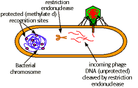
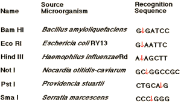

Recombinant DNA Technology Problem Set
Problem 10: Recombinant DNA 5
Tutorial to help answer the question
One of the most significant discoveries which allowed the development of recombinant DNA technology was:
Tutorial
Restriction endonucleases
|
Restriction endonucleases cut double stranded DNA at specific sequences and protect against viruses in bacteria.
Sequences may be palindromes, a sequence which is the same when read in either direction. For example, "Able was I ere I saw Elba." |
 |
Example of specificity of restriction endonucleases

Restriction endonucleases allow the specific and reproducible fragmentation of DNA.The discovery of these enzymes allowed the development of modern recombinant DNA technology.


University of Arizona
Tuesday, October 29, 1996
Contact the Development Team
http://biology.arizona.edu
All contents copyright © 1996. All rights reserved.